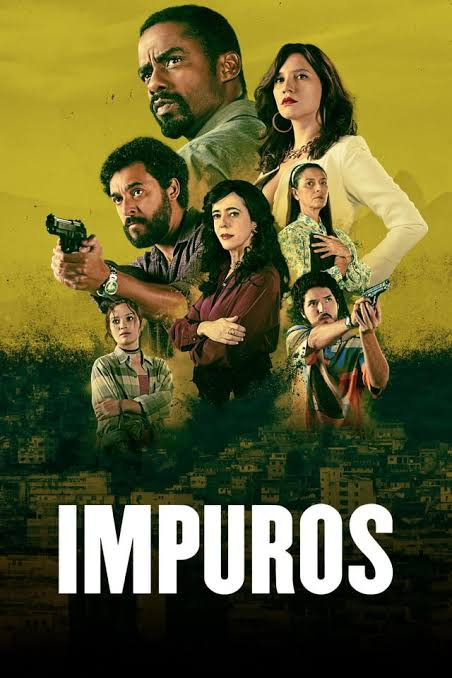
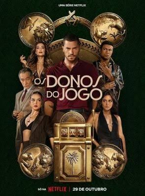
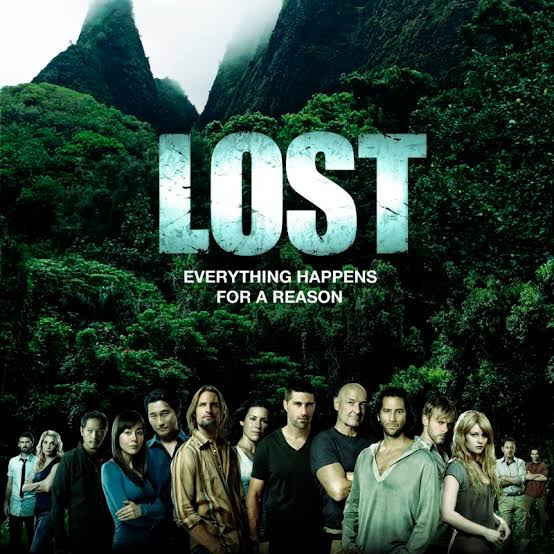
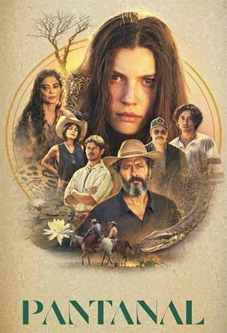

Documentario: assassino em série americano que estuprou, matou e esquartejou 17 homens e meninos entre 1978 e 1991

Evandro do Dendê (Raphael Logam), um jovem morador de uma favela carioca que tenta ganhar a vida honestamente.Sua vida muda quando seu irmão, envolvido com o tráfico, é assassinado por policiais

acompanha a rápida ascensão de Profeta (André Lamoglia), um jovem ambicioso que tenta conquistar espaço e poder no submundo do jogo do bicho no Rio de Janeiro

acompanha os sobreviventes do voo 815 da Oceanic Airlines, que ficam presos em uma ilha misteriosa no Pacífico. O que começa como uma luta pela sobrevivência rapidamente se transforma em um enigma complexo

A história é uma saga familiar que acompanha a trajetória de José Leôncio. Após o desaparecimento misterioso de seu pai, Joventino, ele se torna um rico fazendeiro na região do Pantanal